Gaston Leroux
Lawyer, court reporter, novelist: the man who wrote The Phantom of the Opera.
This page rests on the material the Famille Gaston Leroux entrusted to us in November 2026: the family’s answers, photographs and documents.

Life
- 6 May 1868
Born at nine in the morning in Paris, at 66, rue du Faubourg-Saint-Martin (10th arrondissement), as Gaston Alfred Louis. His father, Dominique Alfred Le Roux, was a public works contractor; his mother was Marie Alphonsine Bidaut. 1civil register
- Lawyer
A photograph in his lawyer’s robe, from the family archive. 3family
- 8 February 1894
Admitted to the Association de la Presse Judiciaire Parisienne – the society of Paris court reporters. 2press card
- 1897
His first time in Russia: he accompanies President Félix Faure on an official visit. 3family
- 10 May 1899
Marries Marie Eugénie Octavie Lefranc in Paris (9th arrondissement). 1civil register
- 1904
The daily Le Matin sends him to Russia to report on the Russo-Japanese War. 3family
- 1905
Back in Russia, he writes about the revolution and the crisis of the tsarist regime. He travels with Jeanne Cayatte, who is expecting a child: on 31 July 1905 their son Alfred Gaston Leroux is born in St Petersburg. 3family
- 1909 – 1910
In Nice, at the Villa Les Cascades on Mont Boron, he writes The Phantom of the Opera. It is serialised in the daily Le Gaulois from September 1909 to January 1910 and published in book form by Pierre Lafitte in 1910. 3family
- 1912
Balaoo – a science-fiction novel and the family’s favourite of all his books. 3family
- 1913
After his Russian journeys, Rouletabille chez le Tsar is published (Pierre Lafitte). 3family
- 14 June 1917
Marries Jeanne Madeleine Barbe Cayatte in Saint-Maur. 1civil register
- 1918 – 1920
On the set of a film adaptation of one of his novels, with his wife and daughter. 3family
- 15 April 1927
Dies in Nice. He rests in the Château cemetery in Nice, just to the left of the entrance, together with his wife Jeanne (1878 – 1962) and his daughter Madeleine. 3family
How the family remembers him
To his family he was the joy of living itself: a bon vivant, full of love, an epicurean and a gifted genius – in the eyes of his family, and today of its descendants too.
“Fatalitas!”
An exclamation in the face of fate and its relentlessness. He linked it to his character Chéri-Bibi.
“Il n’y a pas de hasard.”
There is no such thing as chance. He said it often; his son heard it from him, and the family has passed it down from generation to generation.
The shot from the balcony
Whenever he finished a novel, he stepped out onto the balcony of the Villa Les Cascades and fired a pistol. Then came the celebration, a feast and champagne.


His daily work schedule in Nice hung in his daughter’s room. She had to greet it every day.


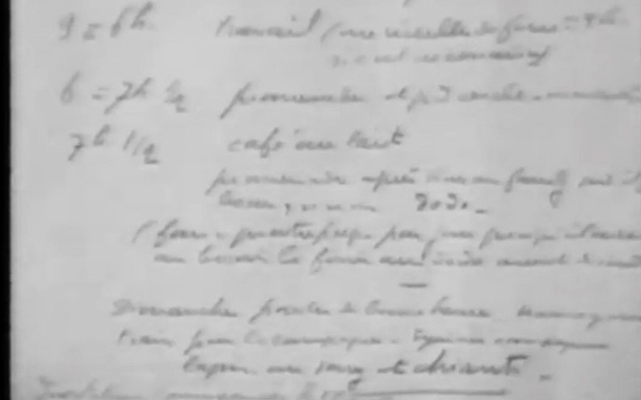

Montmartre
His strongest tie to Montmartre was his brother Joseph Leroux, a chansonnier and actor who lived in the rue Gabrielle. The brothers would meet at the cabaret known as the Cabaret des Assassins – today’s Lapin Agile, where Aristide Bruant also liked to make merry.


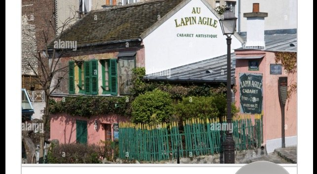
Theatre
The manuscript of his play in three acts, L’Adieu à la vertu.


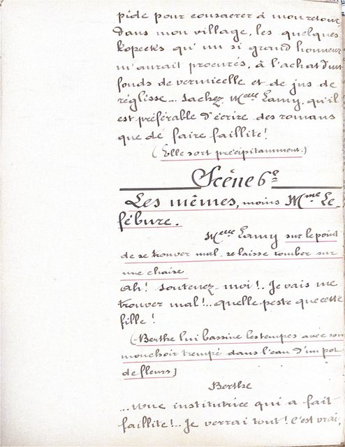
From the family archive
Paris

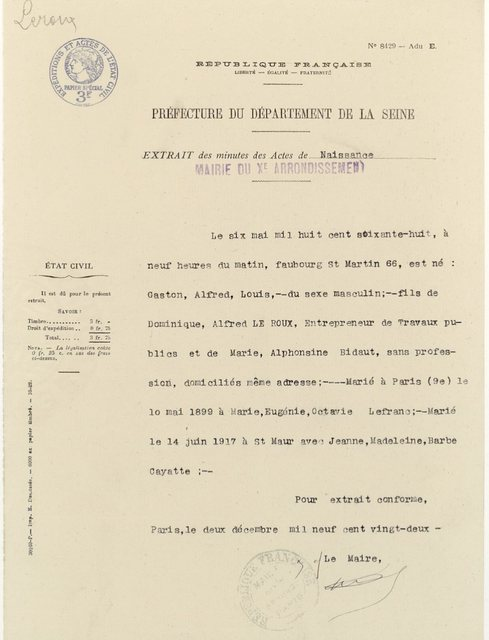


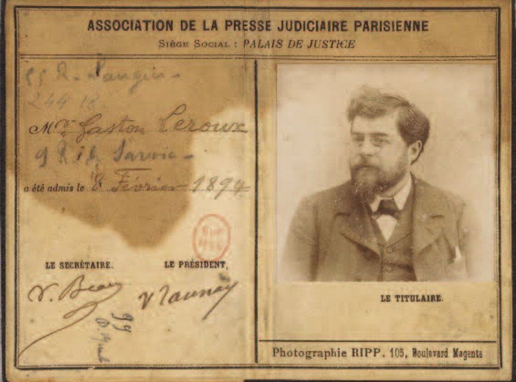
Russia

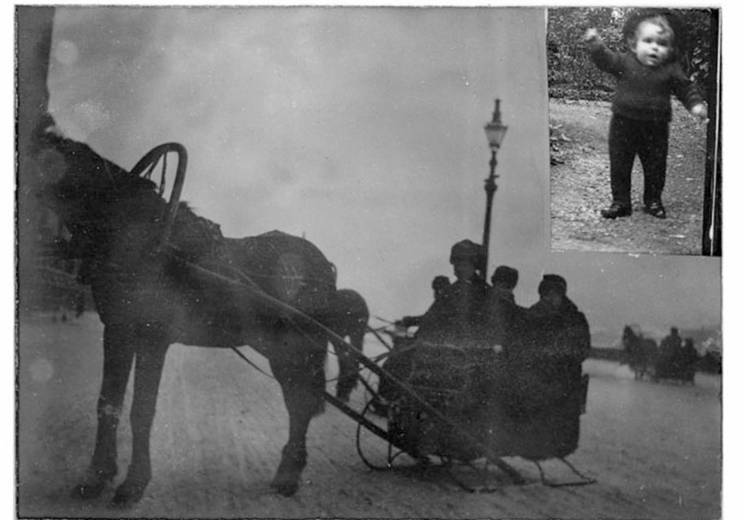

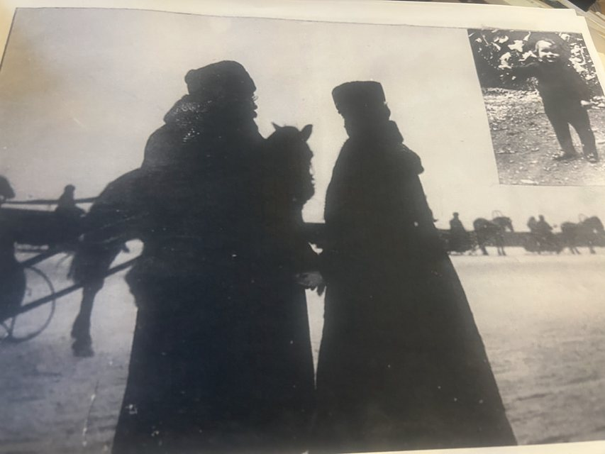
Family


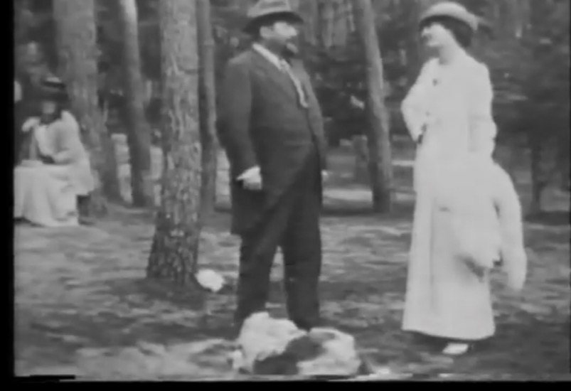


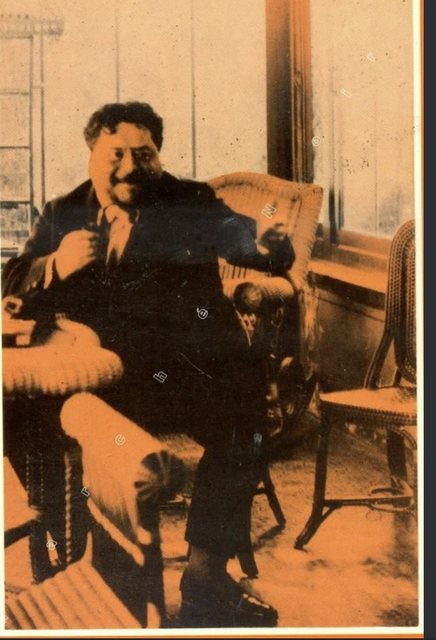

Letters and objects


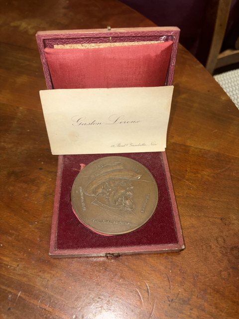


Nice

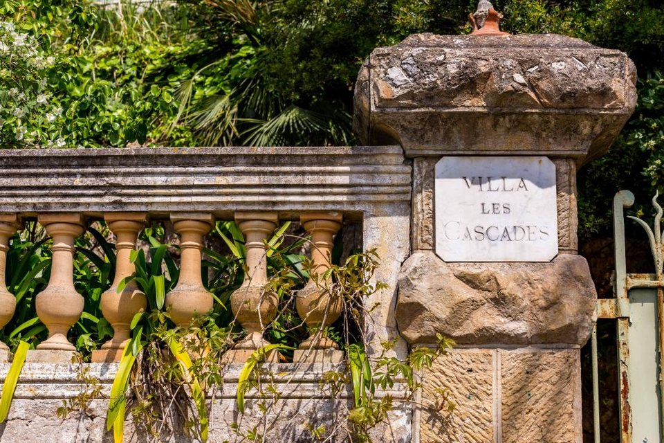

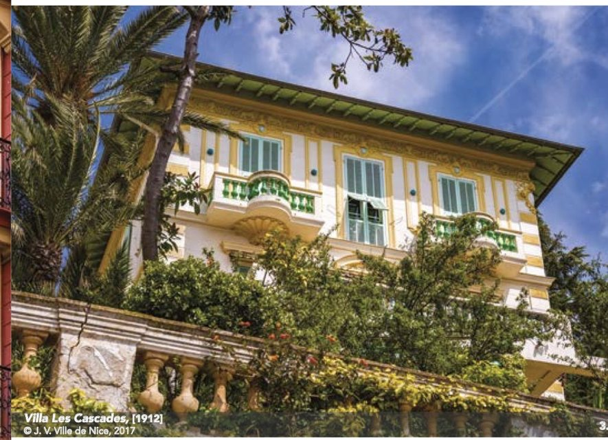


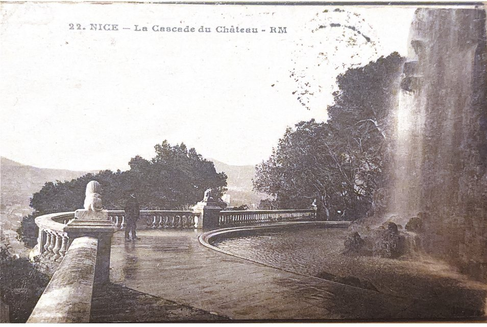


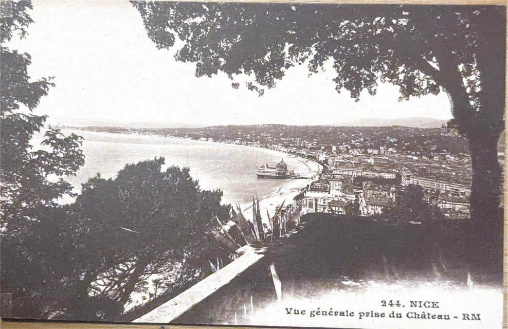

- Famille Gaston Leroux: answers to the LEROUX100 questionnaire and documents from the family archive, November 2026
- Extract from the register of births, Préfecture de la Seine, Mairie du Xe arrondissement, Paris, 2 December 1922 (document from the family)
- Card of the Association de la Presse Judiciaire Parisienne (document from the family)